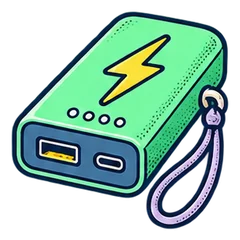

Island coverage
Which places would the network serve?
Plan coverage with residents, operators and community groups in Dunwich, Amity Point and Point Lookout. Each location would have a different audience, power supply, connection and person responsible for the display.

Venue and passenger screens
Club TVs, shop windows and screens aboard buses and ferries could carry short notices. Onboard messages would run in slots agreed with the operator, with next stops, service changes and safety messages taking priority.
Plan to publish or host

Stops and public kiosks
A busy stop could host a read-only display for people waiting or a touchscreen for maps. Choose the sites with operators and passengers. Check legibility in sunlight, boarding space, power and who can get there to fix a fault.
Plan for power and outages

Phones and tablets
A reader can look up a town, follow the issuer’s link or find a local opportunity. Public notices can be read without an account.
Explore the island map
Self-sovereignty in practice
Who decides what gets shared?
The volunteer group would own its call-out. It could invite everyone arriving on a ferry to help while keeping each volunteer’s roster private. It could also ask a host to correct or remove the public invitation. Those choices are what local control means in this proposal.
- The contributor chooses the public copy.
- Agree the wording, purpose, display outlets and expiry before publication. A volunteer can keep a private Community Hours record and choose whether to share it. The people with authority over cultural material decide its use.
- The local host chooses what to carry.
- Hosts and publishers would set the coverage, display hours and correction arrangements together. If an organiser withdraws a notice, notify each affected host and verify removal when devices reconnect. Copies someone has already photographed may persist.
- A reviewer checks the source.
- Record who issued the notice, when it was checked and who can correct it. Council, emergency services and transport operators remain responsible for their own updates.
- Luke holds the work through Strange But True today.
- He’s developing the proposal and handling initial enquiries through his island business. Its Community Ledger makes the plans public. Residents, clubs and businesses can tell Luke how they’d like to take part.
- Founding members would decide what Ready SETCO takes on.
- If the co-operative forms and its members take on the noticeboard, Luke and the members would agree which records, equipment and responsibilities to transfer. The co-operative could then convene publishers and hosts, train moderators and arrange paid cover for reviews, corrections and repairs. How membership and handover would work.
You can already choose the outlets for a draft. When a reviewer approves it, the publishing tool can limit display to those outlets. The longer-term design would let each organisation run its own copy of the service, store the material it has permission to show and pick up changes when it reconnects. Hosts would test that withdrawn or expired notices come down in practice. Read the Sensorium design, section II.
How could two independent hosts trust the same correction?
The paper proposes that contributors sign updates using credentials they control. If the welcome briefing moves, a host could verify the coordinator’s signature, match the correction to the original invitation and update its screen when the connection returns. A reader at the ferry would see the revised meeting time.
The Dunwich computing proposal
What could a local compute rack do?
Luke is pitching for A$6 million to establish a frontier-class computing node at the proposed Ready SETCO co-operative. This is the “missing middle” between a personal device and a distant data centre. The proposal includes the rack, power and cooling, communications, a community learning space and initial support.
A local team could model how a ferry delay might affect a welcome point. Digital twins are models of real places and systems. A council model could show public services and infrastructure. Models of electorates or bioregions could help people explore civic participation or environmental conditions. Each would need dated sources and permission to use them. A Digital Twin of Country would require direction and authority from the relevant Quandamooka people.
Visitors would see the organiser’s confirmed meeting point on the board. The team could keep working scenarios, passenger bookings and rosters in its own systems. The separate noticeboard budget covers displays, editorial shifts, maintenance and replacements.
December–January school holidays
Opening for the school holidays
An eight-week launch across December and January is an option for opening the network during the school-holiday period. Local partners would agree the dates, sites, shifts and funding. The service is intended to continue throughout the year.

Agree island coverage
Walk the ferry-to-bus connections with passengers. Use boarding counts where available and observations at different times to shortlist busy stops. Record who owns each vehicle screen or stop, who can approve its use and how people can read the information while boarding stays clear.

Commission the sites together
Have local crews check a routine notice, a correction and a withdrawal across the agreed outlets. Rehearse working through a lost connection. Check access with residents and first-time visitors. Host setup guide

Coordinate visitors and volunteers
Test what happens when a welcome point changes. The organiser confirms the new location, volunteers receive their shift instructions privately, and travellers see the current public directions. The longer-term ambition is to develop this Straddie architecture for volunteer and tourism management at the Brisbane 2032 Olympic and Paralympic Games. Follow the operations example

Keep the service running
Arrange year-round editorial cover, repair contacts, backup equipment and replacement funds. After the holiday peak, use the service logs to adjust staffing and maintenance across the island.
Implementation and maintenance
What would a funder need to see?
- Costed installation.
- Record each candidate location, host permission, equipment life, access checks and supplier quotes. Show which costs belong to the noticeboard and which facilities are shared with the proposed compute node.
- A funded operator.
- Identify the applicant, future asset owner and paid roles for reviewing notices, technical support and repairs. Budget separately for power, connectivity, insurance, training, battery replacements and equipment renewal. Name who would cover each recurring expense.
- Evidence from actual service.
- Measure availability during agreed display hours, time from an issuer’s correction to confirmation at the screen, battery runtime under load, time to repair faults and whether visitors find current information without help. Track actual costs against the operating budget.
Steward’s publishing instructions
A reviewer approves a public notice and its expiry. A steward checks the feed, releases it and asks each affected host to verify corrections and removals. Publishing roles · Public feed instructions.